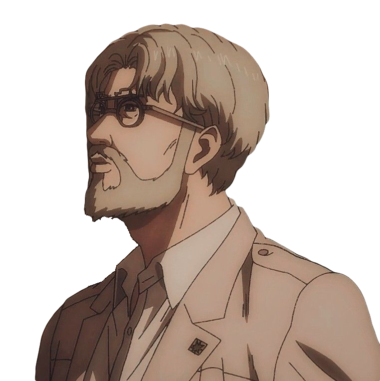
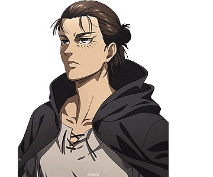
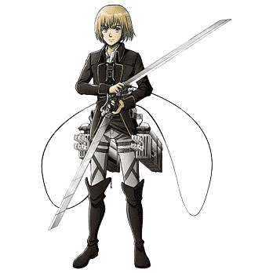
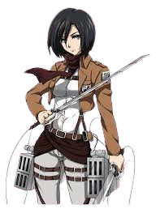
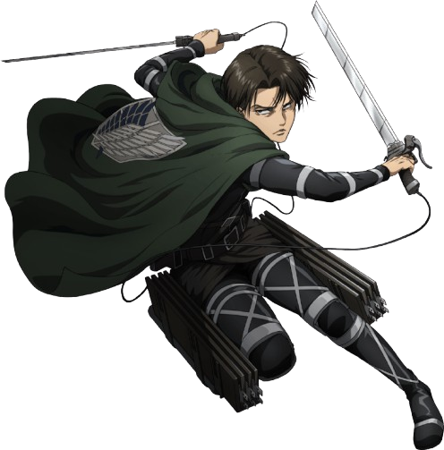
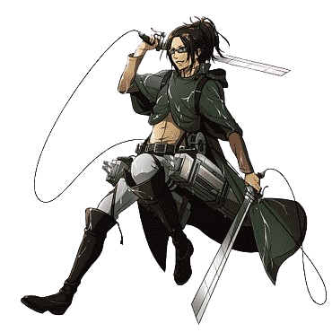
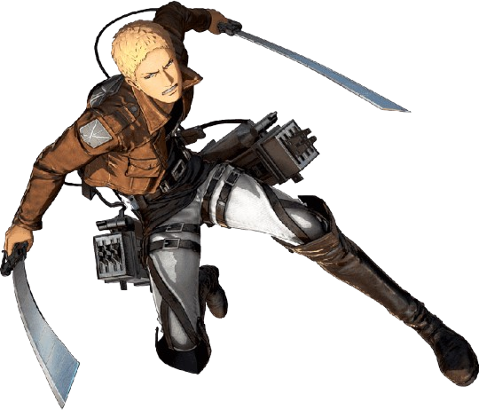
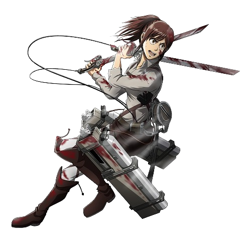

Zeke Yeager
Zeke Yeager (ジーク・イェーガー) is a human Beast Titan and the "general" of the intelligent Titans of Marley , which is located on the Mainland, along with Reiner , Bertolt , and Annie .
Zeke is the son of Grisha and Dina Yeager and the half-brother of Eren Yeager , the grandson of Mr. and Mrs. Yeager, and a member of the Fritz royal family. Zeke can theoretically unlock the full potential of the Coordinate hidden within Eren and use it to its fullest potential.
Read more

Eren Yeager
Eren Yeager (エレン・イェーガー) was a former member of the Survey Corps. He was the main protagonist of Attack on Titan. He lived in Shiganshina District< with his parents until the fall of Wall Maria, where he impotently witnessed his mother being eaten by a Titan. This event would lead to Eren's intense hatred towards the Titans as he swore to wipe all of them off the face of the Earth.
Soon afterward, his father, Grisha Yeager, found him and gave him the key to his basement, instructing Eren to find it at all costs and retake Wall Maria. He then injected Eren with a Titan serum.
In the year 847, Eren, Mikasa Ackerman, and Armin Arlert joined the 104th Training Corps. The three graduated with Eren ranking 5th best, and they joined the Survey Corps following the battle of Trost District.
After finding the basement and unlocking his father's memories, Eren learned about the truth of what the Titans are, as well as the history of Eldia and Marley. Eren then vowed to free his home from their true enemy: the rest of humanity that lives across the ocean.
Eren possessed the power of three Titan. From his father, Eren inherited the Attack and Founding Titans. After eating Lara Tybur during the Raid on Liberio, he gained the War Hammer Titan as well
Read more

Armin Arlert
Armin Arlert (アルミン · アルレルト, Arumin Arureruto ? ) is an elite soldier of the Survey Corps . He is a childhood friend of Eren Yeager and Mikasa Ackerman . Although Armin is not among the top 10 cadets of the 104th Cadet Corps , his intelligence and strategic genius make him one of the most valuable soldiers in the Survey Corps, especially when paired with Hange Zoe . After the Battle of Shiganshina, he gained Titan power and became a
Colossal Titan.
Read more

Mikasa Ackerman
Mikasa Ackerman (ミカサ・アッカーマン) is one of the two deuteragonists of the series, along with Armin Arlert.
After her parents were murdered by human traffickers, Mikasa was rescued by Eren Yeager and lived with him and his parents, Grisha and Carla, before the fall of Wall Maria. She is the last descendant of the Shogun clan that stayed on Paradis Island, thereby related to the Azumabito family, and holds significant political power in Hizuru.
Though she desires only to live a peaceful life, Mikasa entered into the military—where she is considered the best soldier among the 104th Training Corps. She later enlists in the Survey Corps to follow and protect Eren, becoming one of its greatest assets. She is currently serving as an officer in the Corps.
Read more

Levi Ackerman
Levi Ackerman (リヴァイ・アッカーマン), often formally referred to as Captain Levi (リヴァイ兵長), is the squad captain (兵士長, lit. "leader of the soldiers") of the Special Operations Squad within the Survey Corps and is widely known as humanity's strongest soldier.
Read more

Hange Zoe
Hange Zoë (ハンジ・ゾエ) was the 14th commander (団長) of the Survey Corps, named so by Erwin Smith before his death. Hange was formerly a squad leader (分隊長) in charge of the Fourth Squad, having the duties of innovative inventing and conducting research on Titans, including Eren Yeager. After being promoted to commander, Hange was also in charge of expedition planning, management of the regiment, recruiting, and all the other responsibilities previously handled by Erwin. Upon their death, they were succeeded by Armin Arlert.
Read more

Reiner Braun
Reiner Braun (ライナー・ブラウン) is the vice-captain (副長) of the Warriors . He was a former graduate of the 104th Cadet Corps and a soldier of the Survey Corps . He is the illegitimate son of a Marean father and an Eldian mother , and was raised in the Rebelio Ghetto internment zone . As a child, he was chosen to become one of Marley's warriors . At the age of ten, he inherited the power of the Armored Titan .
In 845, he infiltrated Paradis Island with Bertolt , Annie , and Marcel as part of the operation to retrieve the Progenitor.
Read more

Sasha Braus
Sasha Braus (サシャ・ブラウス) is a member of the Survey Corps and a graduate of the 104th Cadet Corps , where she was ranked 9th best cadet. She hails from the village of Dauper , located in the southern region of Wall Rose.
Read more